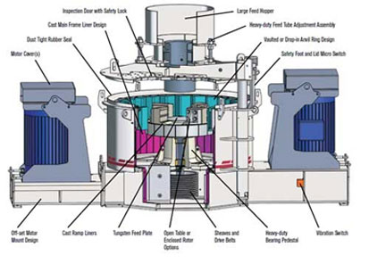

Sand Making Machine
- Type:Crusher Machine
- Model:Sand Making Machine
- Type:VSI,VSI5X
- Trademark:SBM
- Certificate:ISO9001: 2000
- Origin:China
Two Types of Sand Making Machine
In recent years,together with the progress of science and technologies and continuous development, financial improvement is greater and greater for the requirement of industrial automation, and has put forward the new request for the operation approach and sand making gear. Sand making machine plays a increasingly more essential function in the field of national economy. At present, the sand making machine is becoming increasingly more competitive. The higher degree of automation, intelligent, multi-function, higher efficiency, low consumption of mining equipment is increasingly more favored by the sector.
After many years of research, SBM has two types efficient sand making machine: VSI crusher and VSI5X crusher. They both have unique advantages and characteristics, which made them very popular in the mining industry market.The following we will explain in detail the two types sand making equipment.
VSI Sand Making Machine
VSI sand making machine is designed to provide quality sand aggregate for highway, high-speed railway, high-rise buildings, municipal, dam construction, concrete mixing equipment of hydropower, which is the first choice of artificial sand and stone plastic field.
VSI sand making machine is the rotor structure design, unique technology, wear-resistant material crushing speed optimization of hydraulic design and perfect combination. It's a perfect model of combining professional fine crushing technology and machinery manufacturing, fully embody the new technology and new process. In the artificial sand industry, if you want to produce the ideal mechanism of sand and concrete aggregate, VSI sand crusher is the most effective selection .
This series sand making equipment solves the problem of a machine with annular waterfalls, patent down feed system and liner transformation, can achieve "a clever turn of stone dozen stone" and "hot stone"; the use of advanced hydraulic cover opening device make the broken replace wearing parts, convenient convenient cavity; double pump dilute oil lubrication system to guarantee the benign running of main bearing system of independent research and development of high-tech; automatic monitor adverse circumstances in the machine can automatically stop or warning. Because of the unique design concept, this sand maker greatly improves the production efficiency and the quality of the final product, reduce the production cost and the consumption of vulnerable components, and its low twice the price of imported equipment to meet the needs of the domestic market.
VSI5X Sand Making Machine
VSI5X sand making machine is a German authority experts combined with Chinese working condition of the latest design results, is currently the exclusive production with the world's advanced level of high-performance sand crushing equipment.
VSI5X crusher is used for a variety of high hard, hard materials, fine in the field. In the mechanism building sand, stone and various metallurgical slag crusher is more widely used, compared with other types of crusher production with high efficiency. Because of its excellent low wear characteristics, sand making machine has high abrasion and disintegration of production by two times. In addition, because of the product zero pollution, sand making equipment can adapt well to the glass quartz sand and other high purity material production, 80-500t/h production capacity range, VSI5X Sand Making Machine can almost meet any production requirements. Especially on the hard, hard and abrasive materials such as silicon carbide, corundum, sintered bauxite, magnesite, has more advantages than other types of crusher.
The VSI5X Sand Making Machine working principle is basically the same as the VSI sand making machine. But the deep cavity type rotor after the optimization, so that the material is increased about 30% by volume, peripheral protecting plate local wear can be used on the next turn, improve the utilization rate of material, can improve the service life of more than 48%, in order to reduce the wear of the cost of repairs. In addition, the combined hammer design, need to replace worn hammer head part, can reduce the cost more than 30%, the Deputy hammer, effectively prevent the main hammer wear damage after vertical plate.
Technical Data
| Model | Feed at center&sides | Feed at center | Soft Material | Hard Material | REV (r/min) | Power (kw) | Motor Model | Machine Size (mm) |
| Capacity (t/h) | Max.Feeding (mm) | |||||||
| VSI7611 | 120-180 | 60-90 | 35 | 30 | 1700-1890 | 4-55×2 | Y250M-4/55 | 4100×2250×2258 |
| VSI8518 | 200-260 | 100-130 | 40 | 35 | 1520-1690 | 4-90×2 | Y280M-4/90 | 4140×2280×2425 |
| VSI9526 | 300-380 | 150-190 | 45 | 40 | 1360-1510 | 4-132×2 | Y315M-4/132 | 4560×2450×2780 |
| VSI1140 | 450-520 | 225-260 | 50 | 45 | 1180-1310 | 4-200×2 | Y315L2-4/200 | 5100×2690×3200 |
| Model | Feed at center&sides | Feed at center | Soft Material | Hard Material | REV (r/min) | Power (kw) | Motor Model | Machine Size (mm) |
| Capacity (t/h) | Max.Feeding (mm) | |||||||
| VSI5X7615DR | 150-280 | 70-140 | 35 | 30 | 1700-1900 | 4-75×2 | Y280S-4/75 | 4100×2330×2300 |
| VSI5X8522DR | 240-380 | 120-190 | 40 | 35 | 1500-1700 | 4-110×2 | Y315S-4/110 | 4140×2500×2700 |
| VSI5X9532DR | 350-540 | 180-280 | 45 | 40 | 1300-1510 | 4-160×2 | Y315L1-4/160 | 4560×2600×2900 |
| VSI5X1145DR | 500-640 | 250-360 | 50 | 45 | 1100-1310 | 4-220×2 | Y355M1-4/220 | 5000×2790×3320 |
Get Price And Support
Simply complete the form below, click submit, you will get the price list and a SBM representative will contact you within one business day. Please also feel free to contact us by email or phone. ( * Denotes a required field).